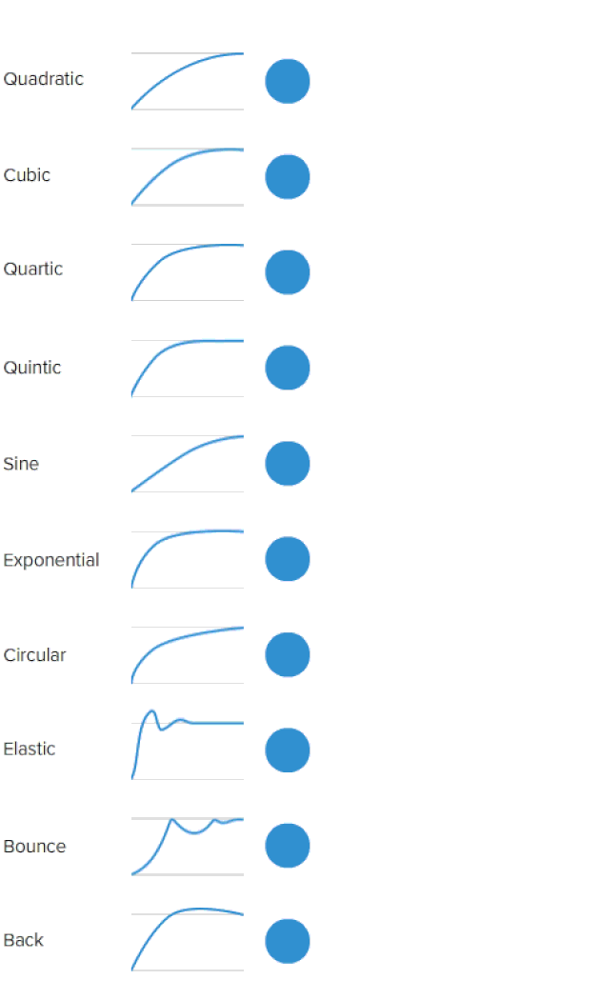

After Effects의 모션 그래프는 움직임과 애니메이션을 시각적으로 조정하고 미세하게 수정할 수 있는 중요한 도구입니다. 이 도구를 통해 부드러운 애니메이션을 만들고, 다양한 그래프 형태를 통해 애니메이션의 속도와 타이밍을 조정할 수 있습니다.
모션 그래프는 주로 키프레임을 조정하고, 움직임의 가속과 감속을 다룰 때 사용됩니다. 아래 GIF 이미지를 통해 모션 그래프의 실제 사용 방법을 확인해 보세요.

애니메이션의 시간과 움직임을 조정하려면 그래프 편집기를 사용하여 곡선을 직접 수정할 수 있습니다. 이를 통해 자연스럽고 부드러운 움직임을 구현할 수 있습니다.